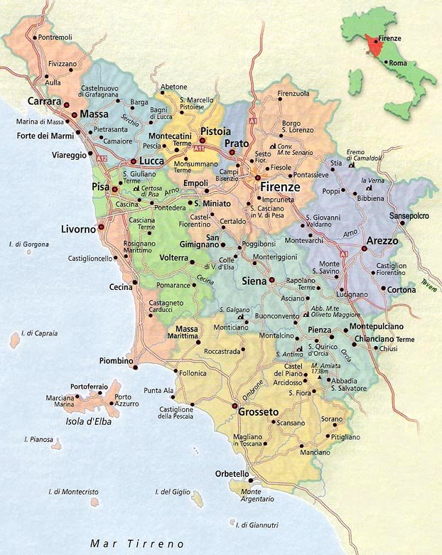
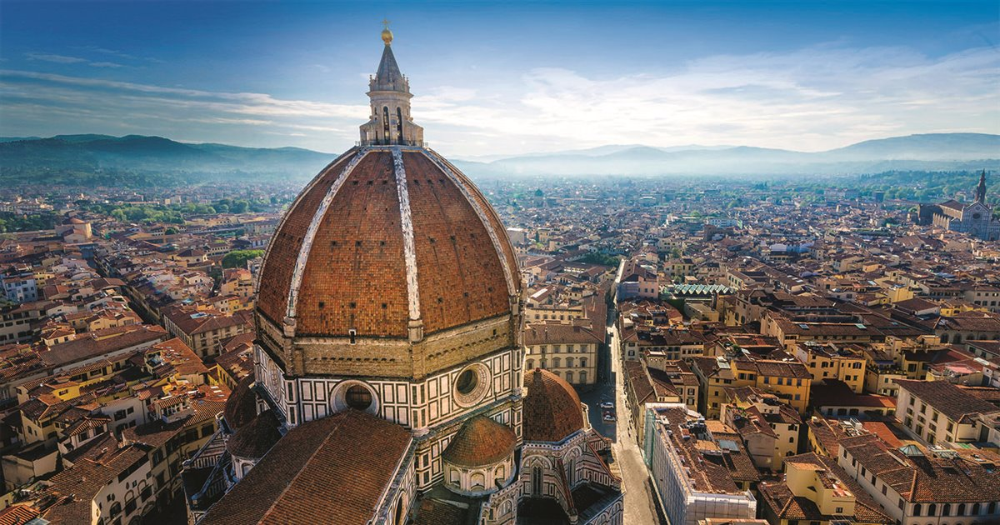

| Nome |
Toscana |
| Capoluogo |
Città metropolitana di Firenze (FI) |
| Data di Istituzione |
1948 |
| Altitudine media |
279 m.s.l.m |
| Superficie |
22987 km^2 |
| Abitanti (agosto 2023) |
3.646.472 |
| Densità |
159 ab/km^2 |
| Comuni |
273 |
| Province |
Arezzo (AR), Grosseto (GR), Livorno (LI), Lucca (LU), Massa-Carrara (MS), Pisa (PI), Pistoia (PT), Prato (PO), Siena (SI) |
| Confini |
Molise, Campania, Basilicata, Mar Tirreno |
| Patrono |
Madonna delle Grazie di Montenero |
| PIL procapite (2017) |
30.400€ |
Posto da visitare assolutamente: Cupola di S.Maria del Fiore - Firenze (FI)
La Cupola di Santa Maria del Fiore,
conosciuta anche come la Cupola del Brunelleschi,
è uno dei simboli più iconici di Firenze, Italia,
e una delle realizzazioni architettoniche più straordinarie del
Rinascimento italiano. Ecco alcuni dettagli sulla cupola:
Architetto:
La Cupola fu progettata da Filippo Brunelleschi,
uno degli architetti e ingegneri più influenti del Rinascimento.
La costruzione iniziò nel 1420 e fu completata nel 1436,
dopo la morte di Brunelleschi.
Costruzione:
La costruzione della Cupola fu una sfida straordinaria per l'epoca,
dal momento che richiedeva una struttura che potesse coprire la
grande navata centrale della Cattedrale di Santa Maria del Fiore senza
l'uso di impalcature o supporti interni.
Brunelleschi risolse questa sfida con un'innovativa struttura a
doppia cupola autoportante.
Dimensioni e forma:
La Cupola ha un diametro di circa 45 metri ed è alta circa 91 metri dal suolo.
La sua forma è emisferica, e la copertura esterna è rivestita da lastre di
terracotta colorata, creando un motivo a fasce orizzontali.
Interno:
L'interno della Cupola è ornato da affreschi che rappresentano il
Giudizio Universale. Questi affreschi sono opera di Giorgio Vasari e
Federico Zuccari e sono stati completati nel XVI secolo.
Lanterna:
Sulla sommità della Cupola si trova una lanterna,
anch'essa progettata da Brunelleschi.
La lanterna contribuisce alla grandiosità e all'eleganza complessiva
della struttura ed è visibile da diverse parti della città.
Veduta panoramica:
Visitatori coraggiosi possono salire a piedi lungo una stretta scala a
spirale all'interno della Cupola, raggiungendo la sommità e godendo di una
spettacolare vista panoramica su Firenze e i suoi dintorni.
Importanza storica e culturale:
La Cupola di Santa Maria del Fiore è un esempio significativo del genio
architettonico del Rinascimento e ha influenzato molti architetti successivi.
È considerata una delle realizzazioni più emblematiche del periodo e uno dei
monumenti più visitati e ammirati di Firenze.
La Cupola di Santa Maria del Fiore rappresenta un capolavoro di ingegneria e
arte, e la sua presenza continua a suscitare ammirazione e stupore tra i
visitatori di Firenze.
